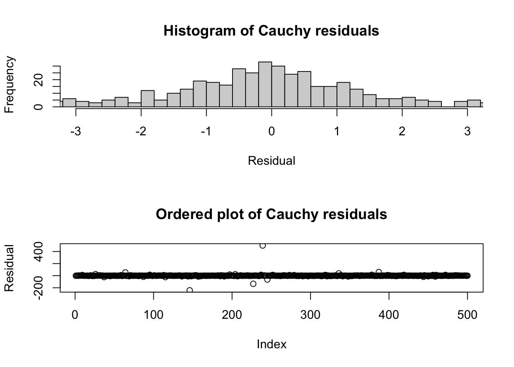
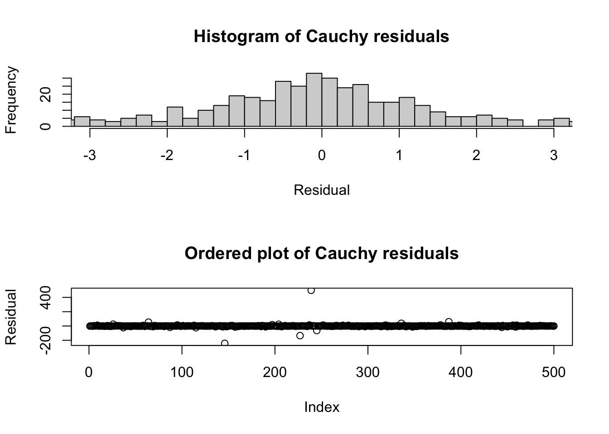
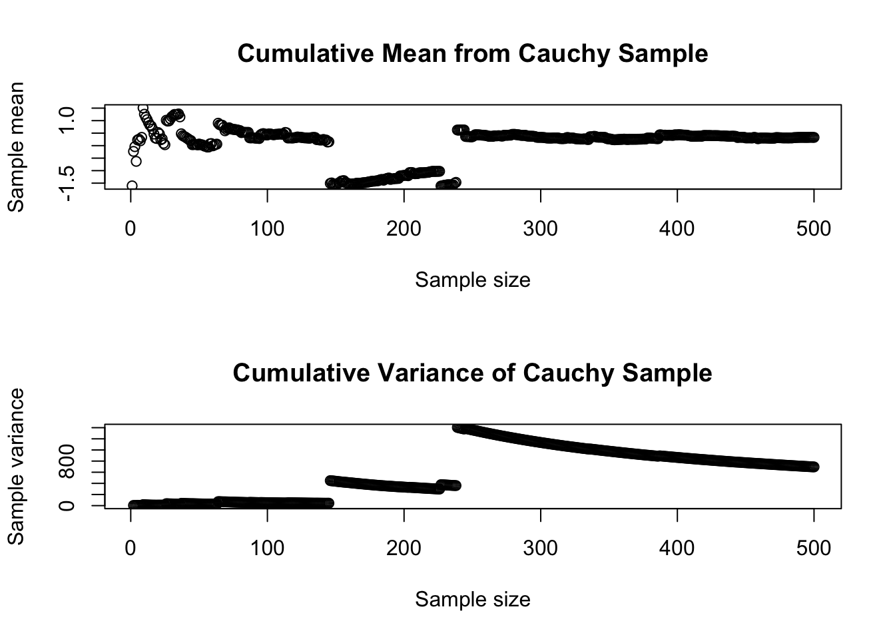

Code
set.seed(2007)
par(mfrow=c(2,1))
tmp <- rcauchy(n=500)
hist(tmp,breaks=seq(-500,500,0.2),xlim=c(-3,3),
main='Histogram of Cauchy residuals',xlab='Residual')
plot(tmp,main='Ordered plot of Cauchy residuals',ylab='Residual')
Our prior work in univariate estimation will serve us well, here. We have already built the understanding and toolkit to examine the sample distribution of the residuals and test them against candidate distributions including the normal distribution.
In truth, the residuals are rarely normally distributed. With small or moderate sample sizes, we may fail to reject the null hypothesis that the residuals are normal, but these “good” results are more often due to low statistical power than to precise conformity to the OLS assumptions.
Readers of this section can use the techniques discussed in #sec-identification to spot Poisson errors, uniform errors, etc. One less-familiar distribution is the pathological Cauchy distribution, which is roughly bell-shaped yet has no mean or variance. The “tails” of the Cauchy distribution are so thick that extreme values of literally any magnitude are guaranteed to happen with sufficient sample size. These huge outliers immediately change the sample characteristics so strongly that the sample will never consistently estimate a single mean or variance.
set.seed(2007)
par(mfrow=c(2,1))
tmp <- rcauchy(n=500)
hist(tmp,breaks=seq(-500,500,0.2),xlim=c(-3,3),
main='Histogram of Cauchy residuals',xlab='Residual')
plot(tmp,main='Ordered plot of Cauchy residuals',ylab='Residual')
The graphs above show that while the center of the Cauchy distribution resembles a wide normal distribution, with most values observed between -3 and +3, the full sample contains many values far from this middle point. In another sample from the same distribution, we could easily observe values in the 1000s.
par(mfrow=c(2,1))
plot(cumsum(tmp)/(1:length(tmp)),main='Cumulative Mean from Cauchy Sample',
xlab='Sample size',ylab='Sample mean')
plot(cumsum(tmp^2)/((1:length(tmp))-1),main='Cumulative Variance of Cauchy Sample',
xlab='Sample size',ylab='Sample variance')
These large and relatively common extreme values pose a challenge for estimation. As you can see from the plots above, our sample estimates of mean and variance have no stability, and do not converge on any “true” parameters with increased sample size. And yet, any small subsample of this distribution might seem roughly normally distributed, and many subsamples will pass a Kolmogorov-Smirnov test of their normality.
A small degree of non-normality will normally not concern us. Least squares methods will work to estimate the betas even if we cannot use maximum likelihood methods, and the least squares estimators for the betas will be unbiased so long as the errors are symmetric and with finite variance. The standard errors of the regression and the confidence intervals for the parameters will remain reasonably robust.
There are three situations which create more serious problems for any regression analysis: * Sometimes, moderate non-normality of the residuals is a consequence of a structural break, a mixed distribution, or slowly drifting parameters. In these cases, the estimators for the betas may be biased.
* At other times, we may be using a regression analysis as a way to describe the *tails* of a prediction, that is, we may want to know the 95th percentile of a predicted point, or the 99th percentile, etc. These tail probabilities are very sensitive to the shape of the error distribution, and even moderate non-normality will result in misleading predictions.^[The 2007--08 financial crisis was worsened when large financial institutions failed to realize that the forecasting errors for their mortgage-backed securities did not have normally-distributed tail probabilities.]
* As shown above, in small or moderate samples we may falsely believe that a truly pathological error distribution is instead normal. Although this happens rarely, it can completely invalidate every aspect of our model. Models of new scenarios, trained on small datasets, should always be treated with a skepticism and wariness.The Kolmogorov-Smirnov test discussed in Identifying distributions is a fine starting point for testing the residuals for normality. Remember to match the error variances for your test: either (i) test your residuals against a Normal distribution with variance \(\hat{\sigma}^2_{\varepsilon}\) or (ii) test your normalized residuals \(\boldsymbol{e}/\hat{\sigma}^2_{\varepsilon}\) against the Standard Normal distribution.
The Shapiro-Wilk test for normality is also commonly used to assess regression residuals, and can be found in most statistical software environments. Because the Shapiro-Wilk test specifically examines normality, it’s somewhat more powerful than the Kolmogorov-Smirnov test, meaning that it’s better able to correctly reject the null hypothesis and confirm small differences between the data and our expectations. The test relies on a statistic with a novel and unnamed distribution which I will not cover here, as it must be calculated through Monte Carlo simulation, but most statistical software packages implement the test with minimal user input.
We may not be able to easily mitigate non-normal errors without making even worse problems for ourselves.
* If the non-normal errors are connected with the need to transform the data, then we may solve two problems at once (non-normality and non-linearity). However, if the relationship is already linear, then transforming the data to help with *non-normality* will usually result in creating new *non-linearity*.
* If the non-normal errors are due to large outliers, then with careful study we may determine that some observations should be removed, or that new covariates should be introduced which help explain the outliers and reduce their residuals. However, outliers are often a genuine and legitimate part of the data generating process and should not be removed simply because they worsen our model fit.
* As before, if the non-normality is due to a mixed distribution or a regime change, we can try to disentangle or separately model the different distributions or regimes.More techniques for applying linear models to seemingly non-linear relationships are discussed in later sections.